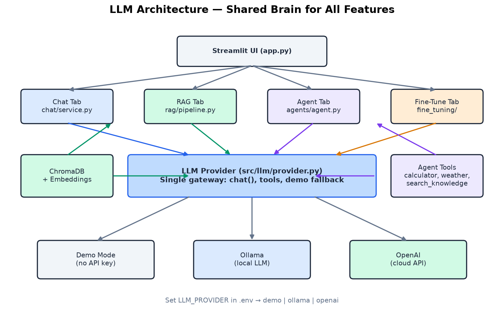
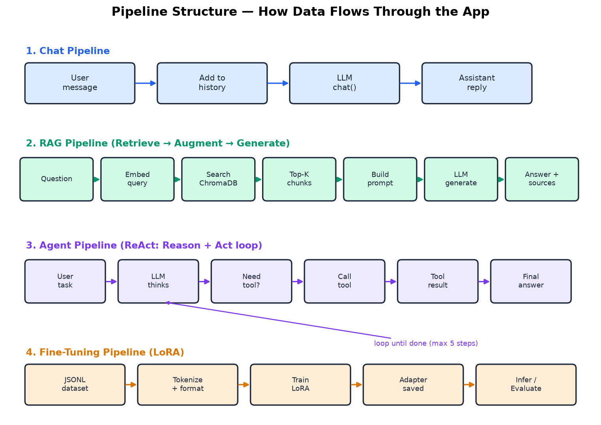

python -m streamlit run app.py
→ http://localhost:8501
Architecture at a Glance
LLM Architecture
All tabs share one LLM provider. RAG uses ChromaDB; Agent uses tools + RAG search.

Pipeline Structure
See how each feature processes input from user message to final answer.

💬 Chat Tab — Generative AI
- Open Chat tab
- Say:
Hello, my name is [your name]
- Ask:
What is my name? — tests memory
- Ask:
Explain generative AI simply
- Click Clear Chat — resets history
Code to read
| File | What it does |
|---|
src/chat/service.py | ChatSession, message history, system prompt |
src/llm/provider.py | LLM abstraction (Ollama/OpenAI/Demo) |
app.py | Streamlit UI |
User message → ChatSession.send()
→ append to messages[]
→ llm.chat(messages)
→ append assistant reply
→ display in UI
📚 RAG Tab — Retrieval Augmented Generation
- Click Ingest Sample Docs
- Wait for indexing (sidebar shows chunk count)
- Ask:
What is generative AI?
- Ask:
What is the ReAct pattern?
- Expand Retrieved Chunks — see source documents
Sample questions
| Question | Source file |
|---|
| What is generative AI? | 01_generative_ai.txt |
| What is RAG? | 02_rag.txt |
| How do AI agents work? | 03_agents.txt |
| What are embeddings? | 04_embeddings.txt |
Question → embed_query() → ChromaDB search
→ top-K chunks → build prompt with context
→ llm.chat() → grounded answer + sources
CLI ingest: python scripts/ingest.py
📖 Open Wiki Tab — Persistent Knowledge Base
- Open Open Wiki tab — pre-built pages are ready
- Browse pages in the expander
- Ask:
What is the difference between RAG and Open Wiki?
- Ask the same question in the RAG tab — compare answers
- Optional: click Compile Sample Docs to rebuild wiki from raw files
RAG vs Open Wiki
| RAG | Open Wiki |
|---|
| Storage | Vector chunks | Markdown pages |
| Retrieval | Embedding search | Page search |
| Knowledge | Raw chunks selected each query | Persistent page per source |
Question → search wiki pages → read compiled markdown
→ build prompt with wiki content
→ llm.chat() → synthesized answer + page sources
CLI compile: python scripts/compile_wiki.py
Wiki files: data/wiki/pages/
Demo scope: keyword page retrieval is implemented; autonomous
cross-page synthesis and contradiction detection are not.
🤖 Agent Tab — Agentic AI
- Ingest docs first (for search_knowledge tool)
- Try:
What is 15 * 23? → calculator
- Try:
Weather in London? → get_weather
- Try:
What time is it? → get_current_time
- Try:
Search docs: what is MCP? → search_knowledge → RAG!
- Try:
Search wiki: what is Open Wiki? → search_wiki → Open Wiki!
- Expand Reasoning Steps for each example
Agent tools
| Tool | Example input |
|---|
| calculator | 25 * 17 + sqrt(144) |
| get_weather | Tokyo |
| get_current_time | (none) |
| search_knowledge | what is RAG? |
| search_wiki | what is Open Wiki? |
User task → Agent loop (max 5 steps):
LLM thinks → tool_call? → execute_tool() → observe → repeat
→ final answer + reasoning steps
🎯 Fine-Tune Tab — LoRA Training
- Install:
pip install -r fine_tuning/requirements.txt
- Dataset — preview 15 instruction examples
- Train — 3 epochs, wait ~5–15 min
- Infer — "What is LoRA?" (adapter used?)
- Evaluate — compare base vs fine-tuned
→ Full Fine-Tuning flow page
🔌 MCP Server
- Run:
python -m src.mcp.server
- Tools exposed: calc, weather, current_time, rag_search, wiki_search
- Connect from Cursor MCP settings
- Read
src/mcp/server.py
MCP Client (Cursor) ←──stdio JSON-RPC──► MCP Server
│
same tools as Agent tab
rag_search → rag_query()
wiki_search → wiki_query()
Integration Diagram
app.py
├── Chat ──► chat/service ──► llm/provider
├── RAG ──► rag/pipeline ──► ChromaDB + llm
├── Open Wiki ─► wiki/pipeline ──► markdown pages + llm
├── Agent ─► agents/agent ──► tools ──► search_knowledge ──► RAG
│ search_wiki ──► Open Wiki
├── Fine-Tune ─► fine_tuning/src/trainer.py
└── MCP (separate process) ──► same tools + RAG + Wiki